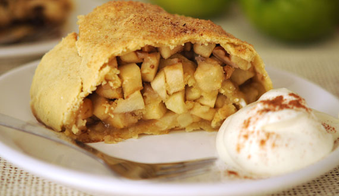
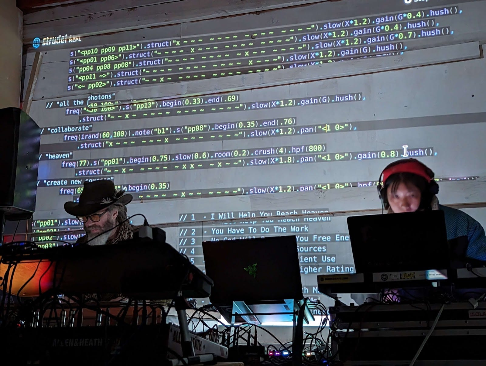
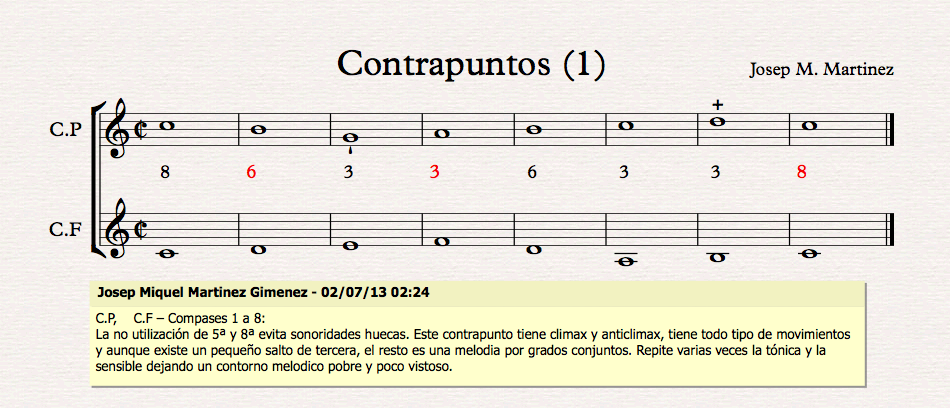
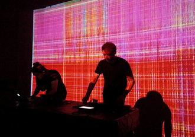
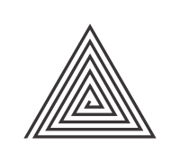
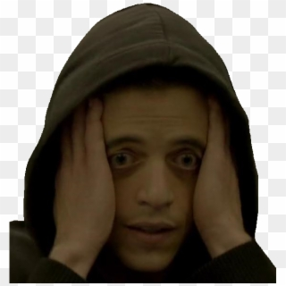

Taller de Strudel
Índice
- 1. Clase 1: Introducción a la programación y Strudel
- 1.1. ¿Qué es Strudel?
- 1.2. Objetivo del taller
- 1.3. Para qué puede servir
- 1.4. Composición algorítmica
- 1.5. ¿Qué es programar?
- 1.6. La interfaz
- 1.7. Documentación
- 1.8. Primeros sonidos
- 1.9. Drums/Batería
- 1.10. Ciclos por segundo (cps)
- 1.11. De BPM a CPS
- 1.12. Cómo hacer sonar varios sonidos al mismo tiempo
- 1.13. Mini-notación
- 1.14. Atajos útiles
- 1.15. Lectura recomendada
- 1.16. Comentarios
- 2. Clase 2: Live Coding, Sintaxis, notas, acordes y efectos
- 3. Clase 3: Sampling via Github o de forma local y efectos visuales
- 4. Clase 4: Síntesis
- 5. Clase 5: Pattern Functions o funciones de patrones
1. Clase 1: Introducción a la programación y Strudel
1.1. ¿Qué es Strudel?

Strudel es un entorno de programación en vivo. Usa un lenguaje de patrones algorítmicos basado en otro entorno llamado Tidal Cycles.

Figura 1: Imagen de una actuación en vivo donde se hace live coding con Strudel.
Ejemplos de uso de Strudel: Playlist de ejemplos en YouTube
1.2. Objetivo del taller

El objetivo del taller es desarrollar habilidades de composición musical, pensamiento computacional y performance en tiempo real a través del live coding en Strudel.
1.3. Para qué puede servir

Como herramienta pedagógica y como forma alternativa de crear y entender la lógica de la música, Strudel tiene diversas utilidades:
- Música en vivo con código
- Composición algorítmica
- Enseñar música y programación
- Notación alternativa
Como estudiantes de pedagogía en música, la idea del taller es ofrecer un acercamiento exploratorio a esta herramienta, valorando su potencial en la sala de clases.
1.4. Composición algorítmica
Antes mencionamos la composición algorítmica, pero ¿Qué es?

Figura 2: Los fractales son un ejemplo de arte algorítmico: la repetición de instrucciones produce formas complejas.
«Como siempre he preferido hacer planes antes que ejecutarlos, he gravitado a situaciones y sistemas que, cuando están operando, pueden crear música con poca o nula intervención de mi parte. Eso es para decir, que tiendo hacia los roles de planificador y programador, y luego me vuelvo una audiencia para los resultados»
- Brian Eno (Alpern, 1995) Traducido
Conocida en inglés como algorithmic composition (composición algorítmica) o automated composition (composición automatizada), la composición algorítmica en la música es la aplicación de un procedimiento formal para hacer música con la mínima intervención humana (Alpern, 1995)
1.4.1. ¿Qué es un algoritmo?
Un algoritmo es una secuencia de pasos lógicos o instrucciones para resolver un problema o ejecutar una tarea. Uno de los ejemplos en nuestra área son las reglas del contrapunto. Para crear un ejercicio de contrapunto que cumpla con las reglas de la tradición hay que aplicar una serie de pasos:

1.5. ¿Qué es programar?
Programar es dar instrucciones a una computadora para resolver un problema, o cumplir un objetivo. La programación y los algoritmos están envueltos en muchas cosas de nuestro día a día, las aplicaciones que usamos en nuestros teléfonos, los tókens en el sistema de transporte (sea micro o metro), el funcionamiento de los semáforos y muchas más cosas.

Como dato curioso, la foto de arriba es de uno de los momentos que definió un término que usamos bastante en la actualidad. El 9 de septiembre de 1947, la científica de la computación y pionera en la informática Grace Hopper estaba trabajando en la computadora Harvard Mark II.
En ese momento las instrucciones a las computadoras se daban con perforaciones en papel. En una de estas instrucciones se metió un insecto que bloqueaba la señal, causando un error en el programa. Desde ese momento es que a los errores en un programa se les llama bugs (insecto en inglés).
En Strudel vamos a hacer algo muy similar: darle instrucciones a una computadora para que genere música.
1.6. La interfaz
Para empezar, ingresemos desde nuestra computadora a la página web de Strudel y mantengamos esa pestaña abierta.
1.7. Documentación
La documentación será nuestra mejor amiga en este proceso, pero ¿Qué es la documentación?
Son las instrucciones, comentarios e información para usar un sistema particular de software o hardware. En este caso para usar Strudel. La documentación oficial de Strudel está disponible en línea.

Figura 3: La documentación de Strudel, sección Getting Started.
Si no sabemos cómo hacer algo, necesitamos acompañamiento o queremos resolver un problema, debemos ir primero a la documentación.
Uno de los grandes problemas de la documentación de Strudel a día de hoy es que no hay una traducción al español. Así pasa en general en el mundo de la informática. Entonces se hace importante recordar que si tienen alguna duda con la documentación, o necesitan ayuda a entenderla no duden en preguntarme.
1.8. Primeros sonidos
Para lograr hacer nuestros primeros sonidos, nos ayudaremos de la sección de primeros sonidos en la documentación.
- Escribe
sound("casio")y dale al botón de play sound("casio:2")elige otro sample
1.9. Drums/Batería
 Strudel viene con sonidos por defecto:
Strudel viene con sonidos por defecto:
- bd = bass drum
- sd = snare drum
- rim = rimshot
- hh = hihat
- oh = open hihat
- lt = low tom
- mt = middle tom
- ht = high tom
- rd = ride cymbal
- cr = crash cymbal
- Creemos un patrón:
sound("bd bd bd bd")divide el ciclo en cuatro partes.- Cambiemos el banco de sonido: sounds -> drum machines -> RolandTR909
sound("bd bd bd bd").bank("RolandTR909")
Desafío 1: Crea tu propio patrón
En 5 minutos, crea tu propio patrón de baterías.
// Desafío 1: Crea tu propio patrón de baterías
$: sound("bd hh sd oh")
1.10. Ciclos por segundo (cps)

- No se usa BPM
- Ciclos por segundo
- Default 0.5
- El tiempo es cíclico, no linear
1.11. De BPM a CPS
- Podemos usar la función
setcpm(110)para establecer el tempo global en ciclos por minuto. setcpm(110/4)significa 110 cpm y 4 beats por ciclo.setcpm(x)es lo mismo quesetcps(x / 60)setcps(110/60/4)es lo mismo quesetcpm(110/4)

[ ]Experimenta cambiando los cps o cpm de tu proyecto
1.12. Cómo hacer sonar varios sonidos al mismo tiempo
- Usar
$:antes de cada instrumento - Ejemplo: (copialo y pégalo si quieres escucharlo)
setcpm(130/4)
$: sound("bd:2(3,8)")
.lpf("100")
.hpf("1000")
$: sound("bd:6*4")
.lpf("100")
$: sound("< - - - sd>*4< - - - [sd sd]>*2")
.lpf("100")
$: sound("hh*4")
$: note("[0,3,7] [0,5,9]"
.add("20"))
.sound("sine")
.room(.8)
.lpf("1000")
.fm("10")
.fme("100")
$: sound("casio(3,8)-")
.room(0.5)
Desafío 2: Crear patrón con batería y otro sonido
En 5 minutos, crea dos patrones que suenen al mismo tiempo: uno con batería y otro con un sonido diferente.
// Desafío 2: Patrón de batería y otro sonido
$: sound("bd*4")
$: sound("casio")
1.13. Mini-notación
[ ]subdivisiones dentro del tiempo del ciclo-silencio*multiplicación/división
¿Qué hará esto?
sound("bd sd bd [sd sd sd]")sound("bd sd*6 bd sd")sound("bd sd bd/2 sd")sound("bd - bd sd")
1.14. Atajos útiles

Ctrl + EnterActualizar reproducción en tiempo realCtrl + Shift + /Comentar línea o bloque de código[ ]Silencia una línea de código y luego actualiza la reproducción.
Desafío 3: Crear notas
- Ayuda en la sección de primeras notas de la documentación
- Añade notas a
sound("casio")y luego cambia el sonidocasioa otro en sounds > samples. - ¿Cómo se podría cambiar el timbre del instrumento varias veces por ciclo?
// Desafío 3: Crear notas
$: sound("casio")
Desafío 4: Modificar un ejemplo, cambiar notas y ritmo
Desde una de las creaciones en la galería de ejemplos, copia el código y experimenta cambiando valores. Además cambia o añade una batería y una melodía. Luego iremos explicando una a una en conjunto.
También puedes explorar:
- Strudel Market
- Awesome Strudel (colección de recursos)
// Desafío 4: Pega aquí el código de un ejemplo y modifícalo
Desafío 5: Para la próxima semana
Haz una versión de alguna canción que te guste en Strudel. No debe ser necesariamente completa.
// Desafío 5: Tu cover de una canción
1.15. Lectura recomendada
- ¿Por qué la gente hace live coding? — artículo académico (en inglés)
1.16. Comentarios
- ¿Qué les pareció esta primera clase?
- ¿Qué fue lo más dificil?
2. Clase 2: Live Coding, Sintaxis, notas, acordes y efectos
2.1. Repaso
- Composición algorítmica
- Cómo hacer patrones rítmicos
- Documentación
- Mini-notation
- Ciclos por segundo
- Stacking de varios sonidos ($:)
- Atajos útiles
2.2. La escena del live coding

- Traducido como programación en vivo
- Puede ser tanto de música como de visuales
- Se utiliza a menudo en las algoraves
2.3. Algoraves

- Algoritmo y raves
- total o predominantemente caracterizado por la emisión de una sucesión de golpes repetitivos.
- Evento en que gente baila con música generada a partir de algoritmos, generalmente hechos con live coding.
- Puede tener diversos estilos
Algunos ejemplos de video:

2.4. Vamos a Strudel
Para esta sección, puede ser útil revisar el repaso en la documentación.
Vamos a (Código para sesión 2) para ver el patrón preparado para la sesión 2.

2.5. Retroalimentación
- ¿Que fue lo que más les costó?
- ¿Qué otras cosas les gustaría aprender a hacer en strudel?
2.6. Recomendaciones
- Si quedan interesados por más, pueden revisar en YouTube los canales de Switch Angel, DJDave, Groovin in G y matt mull.
- Revisar esta playlist de ejemplos y tutoriales con live coding, eventos en vivo y más.